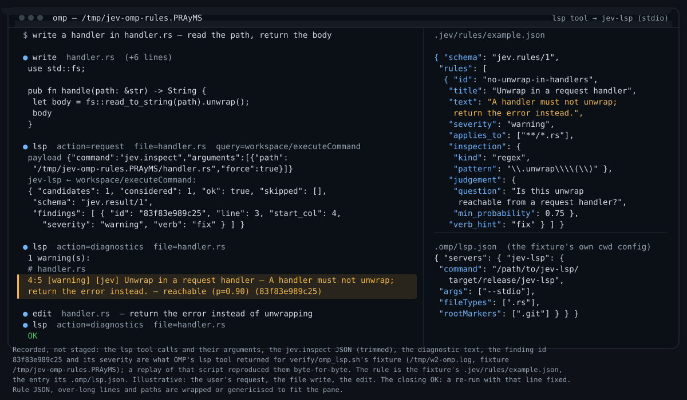
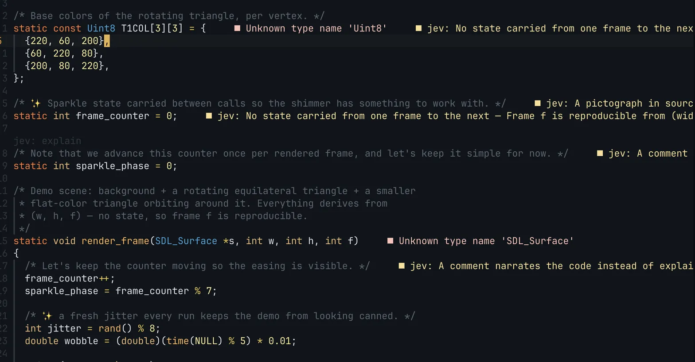
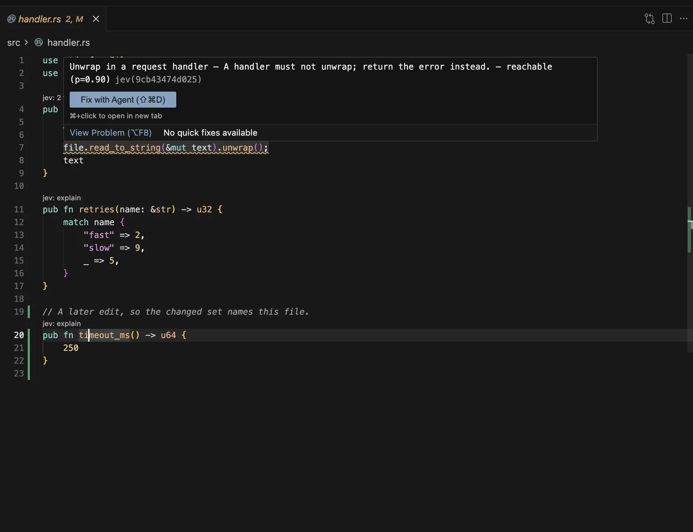

Language server · classifier
Steer code with rules, not with token maxxing.
Jev is a classifier, not a chat model: one typed question about one line → a value and a probability, never prose. jev-lsp runs repo rules as ordinary LSP diagnostics, code actions, and code lens.
410 │ fn handle_request(msg: Request) { 411 │ let body = msg.payload(); 412 │ let data = body.unwrap(); // p=0.91 · fail 413 │ process(data); 414 │ }
Findings on the line — same surfaces your client already has
On save, matching lines become diagnostics a harness or editor already understands. No custom jev/… methods.

Classifier, not chat
prose · whole file · every turn
Here are several thoughts about this file… consider error handling on line 412, also naming, also whether the module boundary is right, also…
{
"value": "fail",
"p": 0.91
}
typed value · one line · clears rule floor
- One question → one answer — pass/fail or typed value + probability floor.
- Rules in the repo —
.jev/rules/*.json, versioned like code. - Semi-deterministic — pattern exact; judgement must clear the floor before publish.
The loop
- Spec — what the code must do.
- Rules —
.jev/rules/*.json(words + pattern for candidate lines). - Steer — jev-lsp on save, human or harness.
- Stay on track — ordinary diagnostics.
{
"id": "no-unwrap",
"question": "Does this line unwrap a Result/Option unsafely?",
"pattern": "\\.unwrap\\(\\)",
"floor": 0.8
}
Full schema → docs/GUIDE.md.
Why local / cheap models work here
Rules carry conventions; the model answers about one candidate line. No matching pattern → no model call.
| rules pass | chat review (same file) | |
|---|---|---|
server.rs ~2.6k lines |
~5.3k in / 345 out · 2 findings · ~$0.00022 | ~30.5k in / 9 out · 0 findings · ~$0.00306 |
| 30 Rust docs | ~$0.0034 · 20 calls | — |
Accuracy from steering, not from burning tokens.
Standard LSP — Neovim first
No custom methods. Primary client Neovim (nvim/ plugin). Anything that starts a language server works — harnesses included. Cursor: editors/cursor/.
diagnostics code actions code lens


require('jev').setup({})